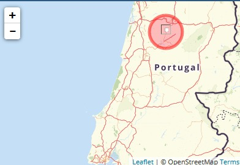
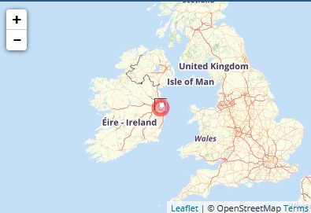
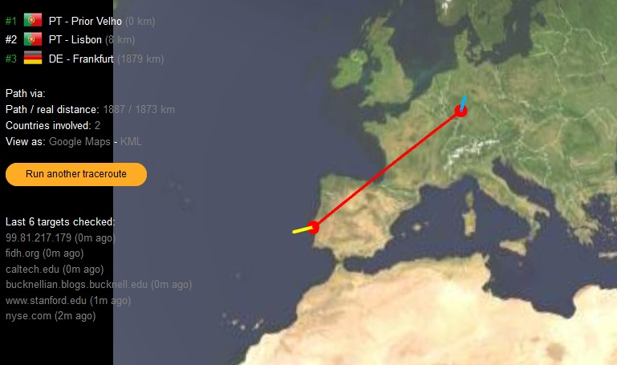
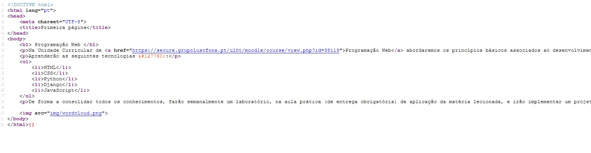
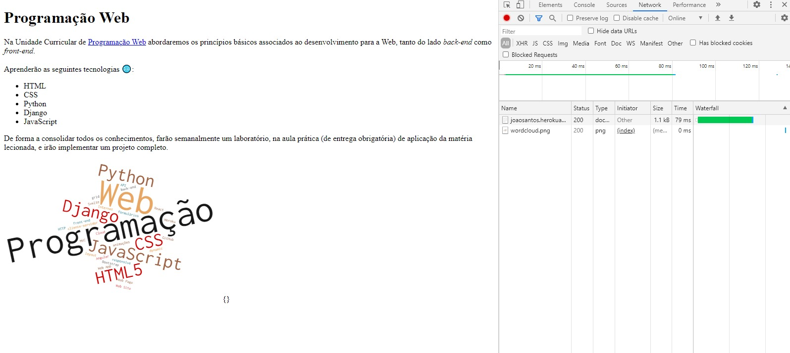
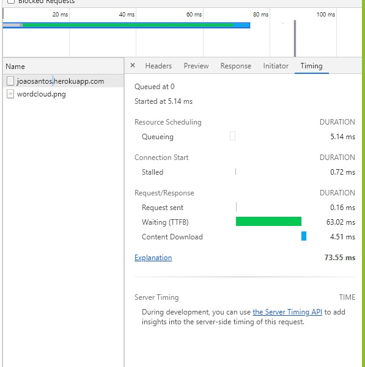
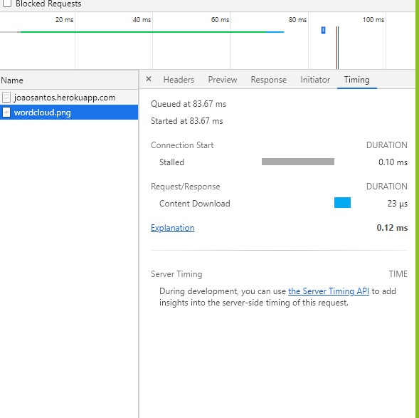

Primeiro Relatório 🌐
Cadeira: Programação Web
Trabalho realizado por: João Santos a21905131
Conhecer a Internet
- Endereços IP
- meu ip - 188.80.132.145
- meu ip localizacao - Viseu/Portugal

- Ip da aplicacao - 99.81.217.179
- localizacao aplicacao - Leinster/Irlanda

- Percurso
- #1 PT - Prior Velho (0 km)
- #2 PT - Lisboa (8 km)
- #3 DE - Frankfurt (1879 km)

Acesso via HTTP à minha página Web
HTTP
- Visualizamos que o codigo fonte enviado pelo servidor web é o mesmo codigo com o codigo que se enconta no ficheiro index.html

Inspect
- Fo utilizado a ferramenta inspect para inspecionar os ficheiros descaregados, deste modo podemos analisar a variedade de informação.

- Podemos visualizar que foram descaregados 2 ficheiros
- O ficheiro index.html
- A imagem "wordcloud.png"
-
|  |
- Tempo de Espera: 63.02ms
- Tempo de Descarga: 4.51ms
|
|  |
- Tempo de Espera: 23us
- Tempo de Descarga: 0.120ms
|